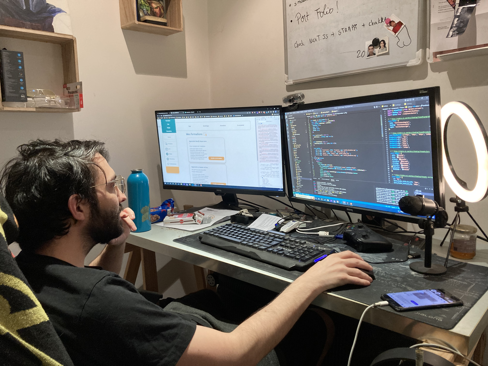
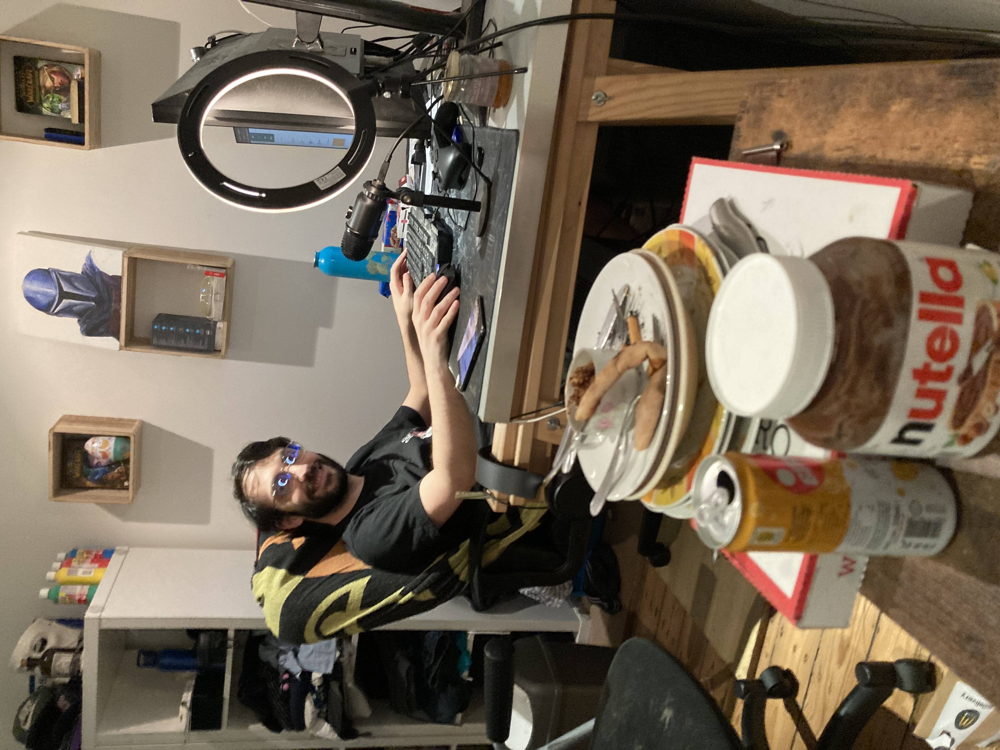

Interview Florian
Bonjour, est-ce que tu peux te présenter ? quel était ton parcours avant le code et ce qui t’as amené dans le métier ?
J’ai commencé à coder très tôt mais pas très bien, forcément, j’avais 13 ans. C’était sur un logiciel qui s’appelait Dreamweaver. C’était bête en soit, mais pratique. J’avais fait mon premier site comme ça, tu prenais des preset et voilà… Après, j’ai tout fait sauf du code. Le dernier travail que j’ai eu c’était barman. Ensuite le covid est arrivé et moi ça faisait déjà longtemps que je voulais arrêter le monde de la nuit alors j’en ai profité. Je suis allé à l’école BeCode où j’ai fait 7 mois de formation. C’était cool, on apprend beaucoup, c’est beaucoup d'informations à capter mais surtout beaucoup d'informations à aller chercher, car on te n’apprend pas forcément ce qu’il y a de mieux mais c’est ce que toi tu vas aller chercher qui va t’améliorer.
T’as appris à apprendre ?
Oui! Tu vas te rendre compte que c’est ça qui est le plus important. Parce que ce que t’apprends va t'amener des problèmes, tu vas rencontrer des bugs dans tous les sens et tu vas être amené à aller chercher dans les fin-fond de stack overflow, une réponse, ou alors même pas une réponse, mais un signe, quelque chose qui ressemble à un chemin à suivre.
Et tu t’attendais à ça avant de démarrer dans le métier ?
Oui, car pour moi coder c’est de la recherche en permanence, les gens qui aiment pas se prendre la tête je pense ce n’est pas fait pour eux. De base, si t’as un problème avec ta porte qui grince, t’essaies de la réparer et au bout de 10 min si t’abandonnes c’est que tu n’es pas fait pour coder. Donc oui je m’attendais à ça. J’ai toujours aimé l’ordinateur, magouiller dessus, pas des trucs de fou mais par exemple, à l’époque, cracker un jeu, il fallait aller chercher une keygen sur internet et tu mettais 4h à le faire fonctionner ! Ou alors je me souviens juste que tu voulais créer une connexion Lan avec la chambre d’à côté pour faire des parties d’Age of Empire, et tu mettais 4h pour trouver comment le faire fonctionner. Alors ça va, je savais dans quoi je mettais les pieds.
Et là t’en où maintenant ?
C’est un peu compliqué parce que j’ai fini la formation, mais je ne suis pas forcément quelqu’un qui a hyper confiance en moi. Surtout dans le monde des bureaux. C’est un peu paradoxal parce que c’est aussi le monde du code. C’est un peu un truc qui m’impressionne comme je viens du monde de la nuit, c’est pas du tout mon lieu de confort, c’est un autre contexte. Du coup, super peur, super nul dans la recherche d’emploi. Savoir comment se vendre, par exmple, juste prendre une photo bien pour mon CV... Ce n’est pas un truc que je sais faire. Du coup ça m’a amené juste à faire un stage et à rien trouver derrière et un petit peu baisser les bras. Je suis quelqu’un qui baisse les bras assez vite je pense. Ce qui est paradoxal...
Ca contredit le point que tu faisais avant haha!
C’est vrai, pour ce genre de chose j’ai pas confiance en moi. Au final ça m’a amené, en manque d’argent, à retourner travailler dans le monde de la nuit. Et ça m’a remotivé surtout à ne pas retravailler dans ce milieu ! Donc là j’ai eu de la chance, parce que j’ai toujours prospecté autour de moi, je ne me suis jamais arrêter de coder, je pense que c’est important de jamais s’arrêter et j’ai quand même eu une cliente, une personne qui m’a dit « j’ai besoin d’une plateforme, j’ai besoin de faire ci et ça dans ma plateforme » et ça tombait bien parce que j’avais besoin de clients. Parce que si je ne trouve pas de clients, si je ne trouve pas de patron, je trouve au moins une voie, pour essayer au moins de faire ma propre expérience. Donc du coup je me suis associé avec un autre pote qui était dans la même situation pour prendre ce client à 2.
A quoi ressemble ta journée type, comment tu t’organises ?
Avec mon pote on s’est fixé des heures où on commence et des heures où on termine. C’est vrai que moi si je ne me fixe pas ça je reste éveillé jusqu'à 6h du mat ! J’aime bien vivre la nuit mais là du coup je me lève à 9h du matin et je fais une pause de midi à 13 et finis à 17. Puis des fois j’allonge jusqu’à 18-19h. C’est vrai que si je suis vraiment passionné par ce que je fais. Des fois tu peux continuer sans te dire que t’es en train de travailler, c’est ça qui est cool. Et je ne me douche pas ! évidemment !
Du coup t’es en freelance mais par défaut ? Toi tu voulais bosser en entreprise ?
Oui, je voulais bosser en start-up, pas forcément en grosse entreprise...
T’en es content de sa situation quand même ?
Ben écoute là c’est mon premier mois, tu m’interview vraiment au début. Mais oui, j’ai tout lâché et je suis content ! Je me lève avec l’envie de faire quelque chose que j’aime ! C’est ça qui te motive dans la vie finalement, c’est d’être heureux.
Ca répond un peu à ma question : qui est qu’est-ce t’anime dans le métier ?
Oui hein, faire ce que t’aime ! Je ne sais pas pourquoi j’aime le code ! Son esthétique, c’est beau ! J’aime bien ce côté un peu magie noire, tu montres ça à n’importe qui et il dit « qu’est-ce que c’est que ce truc ??? »
Tu fais partie des initiés quoi ?
Alors que y’a rien, juste tu codes des pages et les gars pensent que tu vas aller hacker la NASA haha. Qui hack la NASA d’ailleurs t'sais. Et pour quoi faire ?
Du coup si c’était à refaire t’aurais fait pareil ?
Oui mais je n’aurais peut-être pas pris le même stage. Je trouve que le stage c’est hyper important ! Tu vois c’est où je pense que je me suis un peu lésé là-dessus. Comme d’hab, je n’ai pas très bien cherché et le premier truc qu’on m’a proposé j’ai dit oui. Ça me n’a pas apporté énormément de choses en termes d’apprentissage, de nouvelles compétences. Tandis que le mec avec qui je travaille, son stage, ça lui a quasiment tout appris. Il m’a dit « en 3 mois j’ai appris plus qu’en 7 mois de formation ». Et en bossant avec lui je le remarque !
Mais lui il a galéré aussi pour trouver du travail ?
Lui il a galéré après son stage. Ils lui ont dit « non, on ne cherche pas vraiment quelqu’un ». Du coup il a un peu galéré. Il est comme moi il vient du monde de la nuit donc dès que y’a plus d’argent tu retournes bosser derrière le bar… Et je pense comme moi il n’est pas à l’aise avec les gens des bureaux
C’est un conseil que tu donnerais ? Savoir se vendre ?
Savoir se vendre oui, et bien choisir son stage. Parce que moi je suis un peu tombé sur 2 gars qui montaient leur boite et il ne savait pas trop quoi me donner. Ils m’ont fait faire une sorte d’application twicht, une sorte d’extension. C’était complètement éclaté ! D’ailleurs je suis sûr que le code ils l’ont jeté à la poubelle parce que y’avait rien à en faire. Ça fonctionnait mais ça servait à rien. Je pense qu’ils font ça pour voir comment ça faisait d’avoir des salariés. Parce qu’on était 4 stagiaires. On était finalement un petit peu des cobayes finalement. C'était un peu dommage...
T’aurais d’autres conseils à donner à quelqu’un qui veut débuter en 2022 ?
Oui, travailler jusqu’à 2h du matin Hahaha ! Mais pour un mec qui veut débuter, un conseil à lui donner ? Je ne sais pas. Pas baisser les bras pis savoir où tu vas. Moi y’a un truc qui m’a énormément aidé dans le début du code, c’est de me faire mes propres petits projets. Faire des petits jeux ou quoi. C’était un grand kiff ! Je pense c’était un fantasme de faire son propre jeu et en vrai c’est là où t’apprends le plus, parce que t’as une idée donc tu vas essayer des méthodes pour y arriver. Alors que quand tu pars de rien tu ne sais pas trop où tu vas arriver, tu vas nulle part quoi. Du coup ouais coder des petits projets, mais des trucs simples hein, pas obligé de partir en couille. Et un truc qui marche bien quand t’auras pris un peu d’expérience c’est de recréer des sites comme Facebook, ou comme Netflix en termes de base de données, etc. Comme ça aussi t’apprends beaucoup et quand tu mets ça sur un portfolio ça fait pro. C’est quelque chose que j’aurais dû faire depuis le début, c’est un conseil que je te donne que je n’ai pas suivi !
Les qualités d’un bon développeur c’est quoi pour toi ? Techniquement et humainement ?
Je n’ai toujours pas bossé en entreprise donc je ne sais pas. Les qualités je pense être patient. C’est une des plus grosses qualités. Ne pas péter un câble, même quand les gens te demandent quelque chose, les diriger vers la solution, pas non plus la leur donner. Mais être un bon pédagogue. C’est un métier d’entraide, t’es tout le temps en train de chercher des réponses.
Savoir travailler en équipe aussi non ?
Oui, et savoir faire des bonnes recherches
Où est-ce que tu te vois dans 5 ans ?
Sur la plage dans un jacuzzi Hahaha ! En vrai je me vois juste avec du pognon parce que faut pas se le cacher c’est quelque chose qui rapporte. En vrai, je sais pas. On parle toujours du nomade digital mais ça me fait un peu rire, c’est de la fausse pub. On ne va pas tous devenir nomade digital. Tu peux y arriver hein! Mais ce n’est pas la première année que tu le feras, quoi. Mais je pense que c’est réalisable au bout de 5 ans
Y’a vraiment beaucoup de gens qui se voient au bord de la plage avec leur pc...
Ouais, je sais pas si t’as déjà codé en face du soleil? Hahaha ! Je te souhaite bonne chance ! Mais en tout cas je me vois bien faire ça, si ça continue. Je me vois bien aller voir un pote et je vais 2 mois à côté de chez lui dans un Airbnb...
Tu ne te vois pas dans un endroit précis mais tu vois ce que t’aimes dans la vie…
En tout cas c’est du code que je veux faire ça c’est sûr !
Et le métier, tu le vois comment dans 5 ans ?
Je n’ai pas assez d’expérience pour dire. En fait, ça me fait un peu peur de voir ces intelligences artificielles augmenter et être de plus en plus efficaces. Là j’en ai vu une c’est une IA tu peux lui parler et tu peux lui demander de coder et elle code. Tu dis « Tu connais ce langage ? » elle te répond « oui » et tu lui poses une question sur ce langage et elle te donne des lignes de code et tu n’as plus rien à toucher. Donc j’ai un peu peur de ça, qu’on se fasse remplacer comme les taxis se sont fait remplacer par Uber…